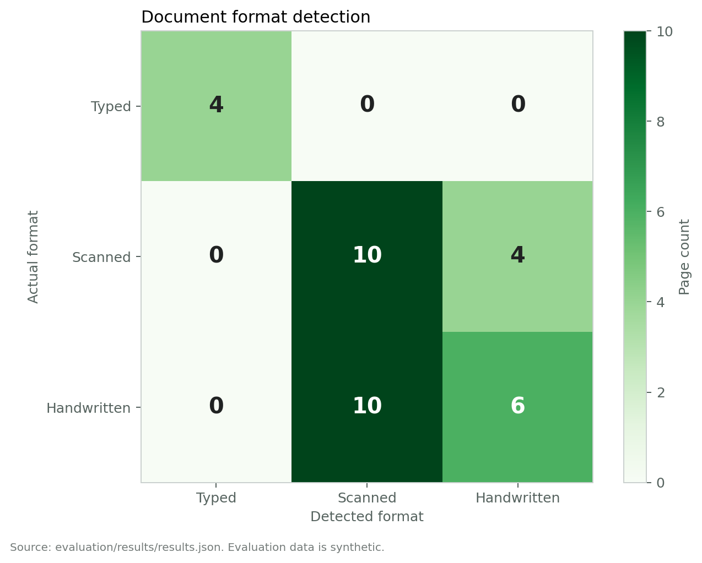
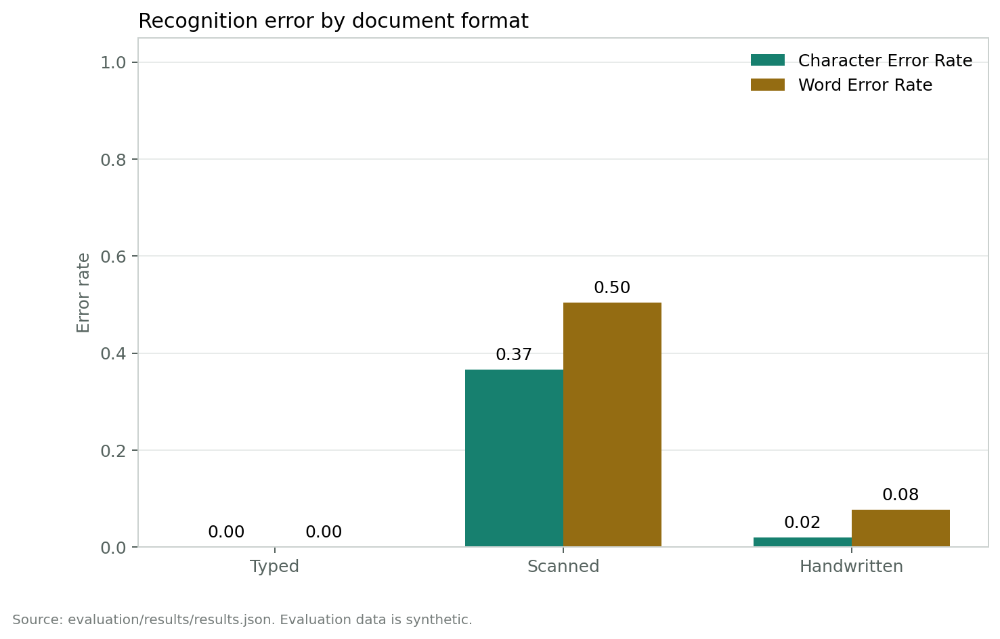
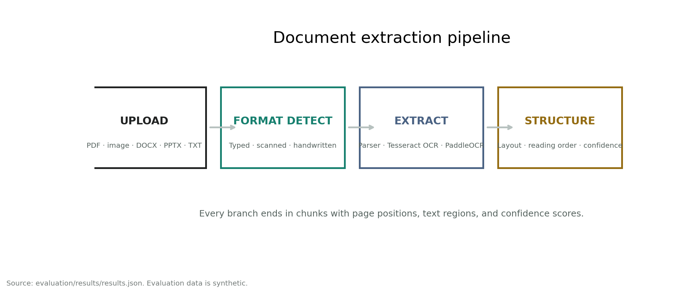
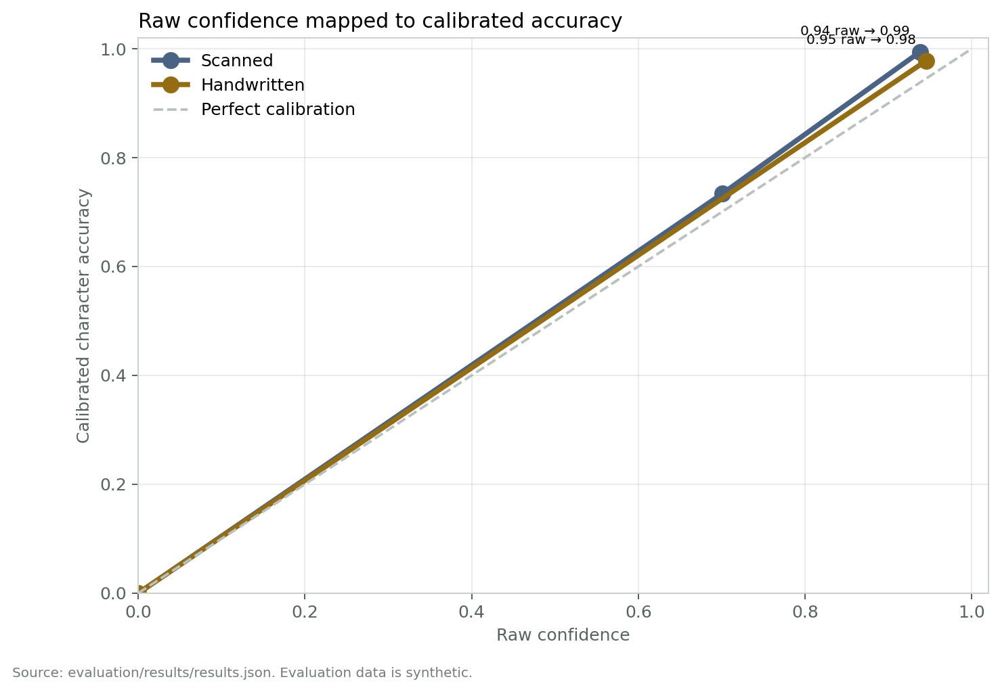
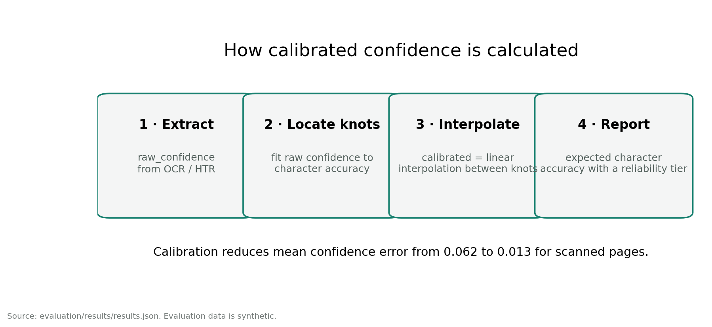
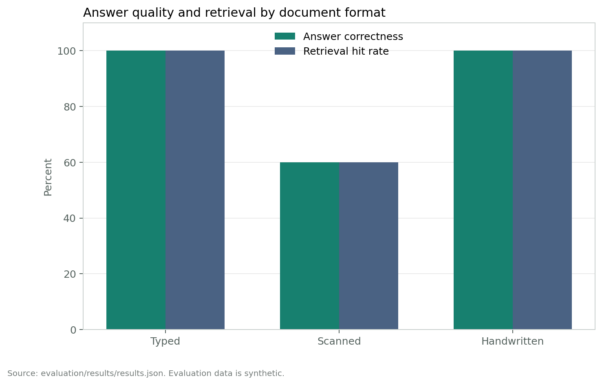

The figures below are calculated from evaluation/results/results.json and data/calibration.json. The current evaluation dataset is synthetic and fixed-seed; real document performance should be reported separately.





